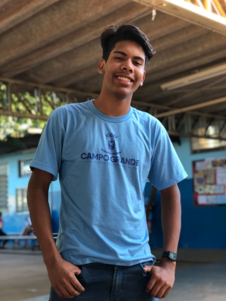
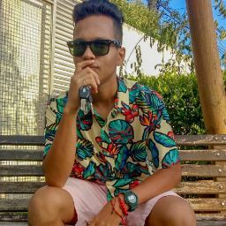
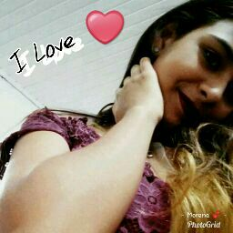
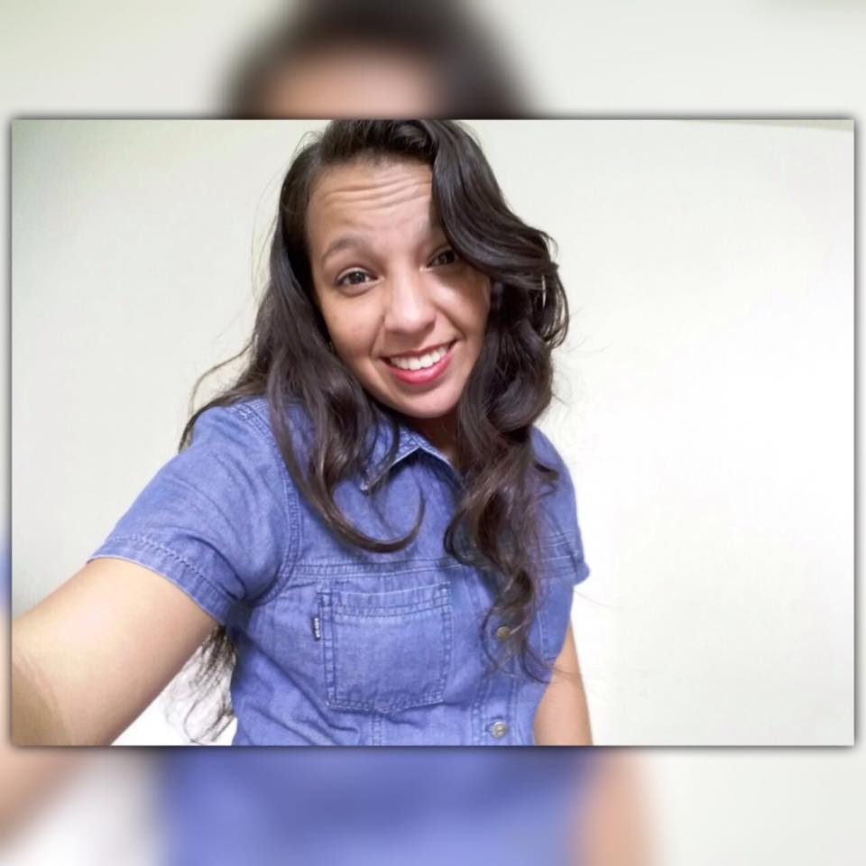

Daniel

Ele é um cara intelectual, que odeia erros de português, e às vezes do nada começa a falar só em inglês, e você fica tipo "ham??". Além disso ele é um cara muito dedicado e focado no que faz, não gosta de nada "meia boca", ou é o melhor, ou nem faz. Esse é o líder e programador do grupo, DANIEL SANTOS.
Douglas

O Douglas é uma pessoa, que se você conhecer ele de verdade, tu se apaixona pelo jeito dele de ser, ele é uma pessoa bem "zen", que se o mundo cair, ele vai olhar pra você e vai falar: "Tudo vai ficar bem!", e isso com muita tranquilidade. Esse é o pesquisador e programador do grupo, DOUGLAS ANGELO, ou melhor dizendo "Santoro".
Victor

O Victor, é um cara muito carismático, e simpático, às vezes ele consegue ser chato, mas só as vezes, então a gente releva. Ele é parceiro, e gosta de aprender, as vezes mesmo ele não sabendo fazer algo, ele se esforça para fazer mesmo assim, pergunta como que faz, vai atrás, e faz, essa é uma das melhores qualidades dele. Esse é o pesquisador e editor de imagens do grupo, VICTOR RICKHELMY.
Monik

A Monik pra mim ainda é um "incógnita", pois chegou a pouco tempo, então não a conhecemos muito bem ainda, então vou falar do que percebemos até agora. Ela é uma pessoa simpática, e aparenta ser bem meiga,e uma boa pessoa, espero que tenhamos tempo para a conhecer de verdade. Essa é pesquisadora do grupo, MONIK MIRANDA.
Ana Paula

Ah essa sou eu, eu sou uma pessoa que sorri de tudo, você só não gosta de mim, se não quiser, porque eu sou um amorzinho. Mas enfim, sou uma pessoa muito dedicada nas coisas que faço, e o meu lema é ser a própria diferença onde eu for, e no que eu fizer. Essa sou eu, a escritora e design do grupo, ANA PAULA ESPÍNDOLA.